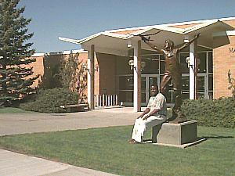

Mark Austin Technology Building |
|
| The Mark Austin Building is the technology center for Ricks College. The building includes state-of-the-art facilities for Automotive Technology, Building Construction, Design and Drafting, Electronics, Manufacturing Engineering and Welding Technology. Degree programs in these areas prepare the student for either job placement after Ricks College or transfer to four-year universities. The majors of chemical, civil, electrical and mechanical engineering prepare the graduate for advanced study at the university level. |  |